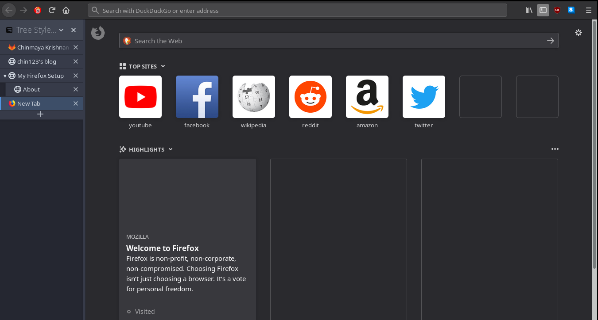

With diligence it is possible to make anything run slowly.- Tom Duff
One reason often stated when someone is asked why they use Firefox over other fine alternatives like Chromium (and its sidekicks Opera, Brave et al), w3m, Internet Explorer is that Firefox has a very rich addon ecosystem and is (still) very customizable (some of the posts on /r/unixporn will blow your mind). With that thought, I thought I would share how I use Firefox to browse the web everyday.
First off, this is what my Firefox setup looks like:

Right off, you can notice a few obvious things. The most obvious one is that the tab list is not on the top, but rather to the left. Removing the default tab bar was pretty simple with a declaration in userChrome.css (useful guide on how to do so by /u/DylanBoss, and the specific rules you have to add). The addon used for the vertical tree like tab structure is called Tree Style Tab, which I'll talk about later. The second thing is that there is no searchbar, but that was pretty useless in the first place as you can just search from the normal url bar.
Another thing different from the default firefox config is the dark theme. This can be set from the Firefox Customize... option in the menu, along with setting a dark gtk theme (mine is arc-dark).
No discussion about Firefox would be complete without mentioning addons. These are the addons which I view as 'must-have'.
Honourable mentions go to NoScript, Privacy Badger, and Tridactlyl.
Even with addons moving to WebExtensions, I haven't missed many things from the XUL days, and all the addons I regularly use have made the switch. Especially since the quantum update, Firefox has been a very pleasant browser to use.
{kind=link}